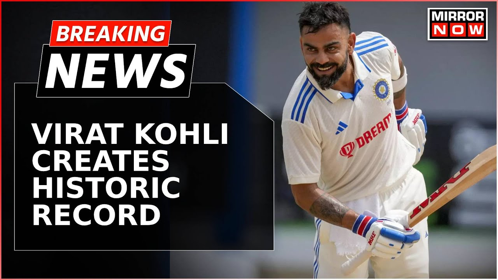
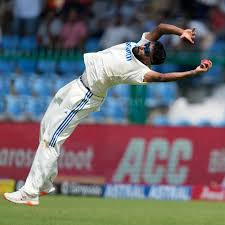

"Widley ranked as one among the top three batsman in the cricketing world"
Widely ranked as one among the top three batsmen in the cricketing world,
Indian skipper Virat Kohli is an inspiration for many. From being a flamboyant
go-getter who steered India to its U-19 CWC championship in the year 2008, Virat
has turned himself into one of the fittest and most disciplined athletes of his time.
He was born on November 5, 1988 in Delhi into a Punjabi Hindu family. His father Prem Kohli
was a criminal lawyer and his mother Saroj Kohli, a housewife. He completed his schooling at
Vishal Bharti Public School. In 1998, the West Delhi Cricket Academy was created and a nine-year-old
Kohli was part of its first intake. Playing at the top order in the national ODI side for which he made his
debut in the year 2008 against Sri Lanka, he has scored over 12,000 runs at a staggering average of 59.07 runs.
He also leads the national side in test matches as well as in T20 international games. Virat Kohli has also been
a part of the Indian Premier League since its inception and has played from Royal Challengers, Bangalore ever since.
Widely regarded as one of the most aggressive batsman in the world, he is a very technically gifted player who has
accepted on numerous occasions that he loves to chase a target. He was awarded the Arjuna award in the year 2013 and
was also conferred the Padma Shri in 2017. Kohli married his lady love and Bollywood actress Anushka Sharma in 2017.
Together they welcomed their first child in 2021, a baby girl named Vamika Kohli.
Technology
"Artificial intelligence is the simulation of human intelligence"
Artificial intelligence is the simulation of human intelligence processes by machines, especially computer systems.
Examples of AI applications include expert systems, natural language processing (NLP), speech recognition and machine vision.
As the hype around AI has accelerated, vendors have scrambled to promote how their products and services incorporate it.
Often, what they refer to as "AI" is a well-established technology such as machine learning.
AI requires specialized hardware and software for writing and training machine learning algorithms.
No single programming language is used exclusively in AI, but Python, R, Java, C++ and Julia are all popular languages among AI developers.
Entertainment

"Mohammed Siraj's stunning catch:"
After 3 days of rain playing spoilsport during the ongoing second match of the India vs Bangladesh Test series,
the fans were finally treated to some action on day 4 of the match. The Indian bowlers capitalised on their start
on day one to put the Bangladesh batsmen on the back foot with some crucial wickets. However, one incident from
Day 4 is now going viral on social media as pacer Mohammed Siraj stretched himself to the limit in a remarkable display of
athleticism to dismiss Bangladesh batsman Shakib al Hasan. Also Read | India vs Bangladesh, 2nd Test: Day 3 called off due to wet outfield in Kanpur
The incident occurred in the 56th over of the match when Bangladesh veteran Shakib al Hasan stepped out of his crease to face Ravichandran Ashwin
on the leg side, but the left-hander didn't get his timing right and the ball went up in the air. Mohammed Siraj started to run backwards towards
the ball and for a second it looked as if the pacer had made a mistake with the placement. But in the end, Siraj stretched back and took a sensational
catch that left Shakib in disbelief.